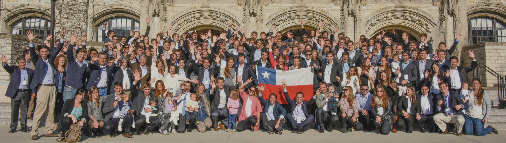

Aporte País
Desarrollar iniciativas y aportar en la discusión del desarrollo de la sociedad chilena, basado en datos y en las necesidades tangibles del país y sus ciudadanos.

MBA Chile es una corporación sin fines de lucro constituida conforme a la legislación chilena, cuyo propósito es fortalecer y articular la comunidad de profesionales vinculados a programas MBA, promoviendo espacios de encuentro, desarrollo profesional y colaboración.
De este objetivo se desprenden tres pilares que están alineados con el espíritu de MBA Chile: aporte país, colaboración y empleabilidad.
Desarrollar iniciativas y aportar en la discusión del desarrollo de la sociedad chilena, basado en datos y en las necesidades tangibles del país y sus ciudadanos.
Potenciar la comunidad a través de ampliar las redes de contacto entre estudiantes, ex-alumnos y stakeholders claves, que permita generar nuevos negocios, empleos o iniciativas.
Mejorar las alternativas de empleo para los egresados de MBA, dando a conocer los beneficios de realizar un MBA en el extranjero y generando lazos con empresas en todo el mundo.
MBA Chile cuenta con 4 equipos para poder cumplir su objetivo:
Comunidad de chilenos estudiantes y alumni de programas de MBA de distintas universidades de Estados Unidos.
Ver más, próximamenteComunidad de chilenos estudiantes y alumni de programas de MBA de distintas universidades de Europa.
Ver más, próximamenteComunidad de chilenas postulantes, estudiantes y alumni de programas de MBA de distintas universidades de Estados Unidos y Europa que busca aumentar la participación de mujeres en MBAs en el extranjero.
Ver más, próximamenteComunidad de postulantes, estudiantes y alumni en Chile de programas de MBA de distintas universidades de Estados Unidos y Europa.
Ver más, próximamente